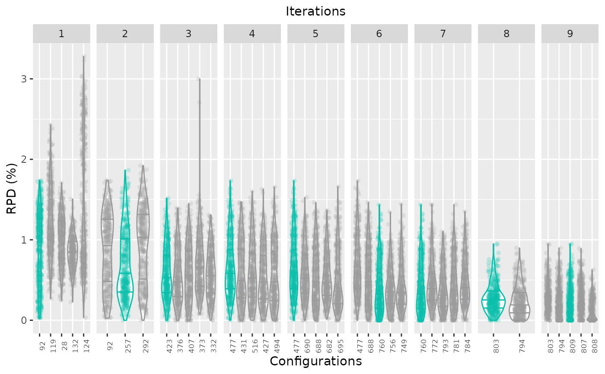

Box Plot Testing
boxplot_test.RdThe `boxplot_test` function creates a box plot that displays the performance of a set of configurations on the test instances.
The performance data is obtained from the test evaluations performed by irace. Note that the testing is not a default feature in irace and should be enabled in the setup (see the irace package user guide for more details).
boxplot_test( irace_results, type = "all", rpd = TRUE, show_points = TRUE, file_name = NULL )
Arguments
| irace_results | The data generated when loading the |
|---|---|
| type | String, (default "all") possible values are "all", "ibest" or "best". "all" shows all the configurations included in the test, "best" shows the elite configurations of the last iteration and "ibest" shows the elite configurations of each iteration. Note that "ibest" requites that irace includes the iteration elites in the testing. |
| rpd | (`logical(1)`) TRUE to plot performance as the relative percentage deviation to best results per instance, FALSE to plot raw performance. |
| show_points | Logical, (default TRUE) TRUE to plot performance points together with the box plot. |
| file_name | String, File name to save plot (example: "~/patch/example/file_name.png") |
Value
box plot
Examples
boxplot_test(iraceResults)boxplot_test(iraceResults, rpd = FALSE)boxplot_test(iraceResults, type = "ibest")boxplot_test(iraceResults, type = "best")